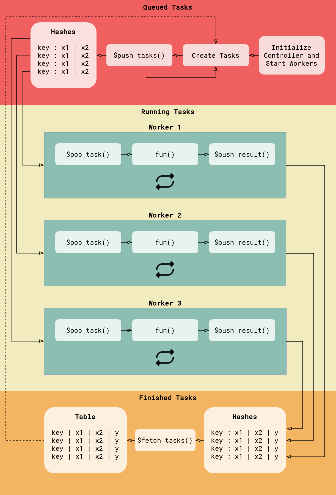

rush is a package for parallel and distributed computing in R. It evaluates an R expression asynchronously on a cluster of workers and provides a shared storage between the workers. The shared storage is a Redis data base. Rush offers a centralized and decentralized network architecture. The centralized network has a single controller (Rush) and multiple workers (RushWorker). Tasks are created centrally and distributed to workers by the controller. The decentralized network has no controller. The workers sample tasks and communicate the results asynchronously with other workers.
Features
- Parallelize arbitrary R expressions.
- Centralized and decentralized network architecture.
- Small overhead of a few milliseconds per task.
- Easy start of local workers with
processx - Start workers on any platform with a batch script.
- Designed to work with
data.table. - Results are cached in the R session to minimize read and write operations.
- Detect and recover from worker failures.
- Start heartbeats to monitor workers on remote machines.
- Snapshot the in-memory data base to disk.
- Store
lgrmessages of the workers in the Redis data base. - Light on dependencies.
Install
Install the development version from GitHub.
remotes::install_github("mlr-org/rush")And install Redis.
Centralized Rush Network

Centralized network with a single controller and three workers.
The example below shows the evaluation of a simple function in a centralized network. The network_id identifies the instance and workers in the network. The config is a list of parameters for the connection to Redis.
library(rush)
config = redux::redis_config()
rush = Rush$new(network_id = "test", config)
rush## <Rush>
## * Running Workers: 0
## * Queued Tasks: 0
## * Queued Priority Tasks: 0
## * Running Tasks: 0
## * Finished Tasks: 0
## * Failed Tasks: 0Next, we define a function that we want to evaluate on the workers.
fun = function(x1, x2, ...) {
list(y = x1 + x2)
}We start two workers.
rush$start_local_workers(fun = fun, n_workers = 2)## INFO [17:30:43.422] [rush] Starting 2 worker(s)
## $`d82afa87-9f2c-41a4-891c-7490ea5eba46`
## PROCESS 'Rscript', running, pid 24531.
##
## $`fad19573-bfe6-4809-8be2-bdde44191210`
## PROCESS 'Rscript', running, pid 24542.Now we can push tasks to the workers.
xss = list(list(x1 = 3, x2 = 5), list(x1 = 4, x2 = 6))
keys = rush$push_tasks(xss)
rush$wait_for_tasks(keys)And retrieve the results.
rush$fetch_finished_tasks()